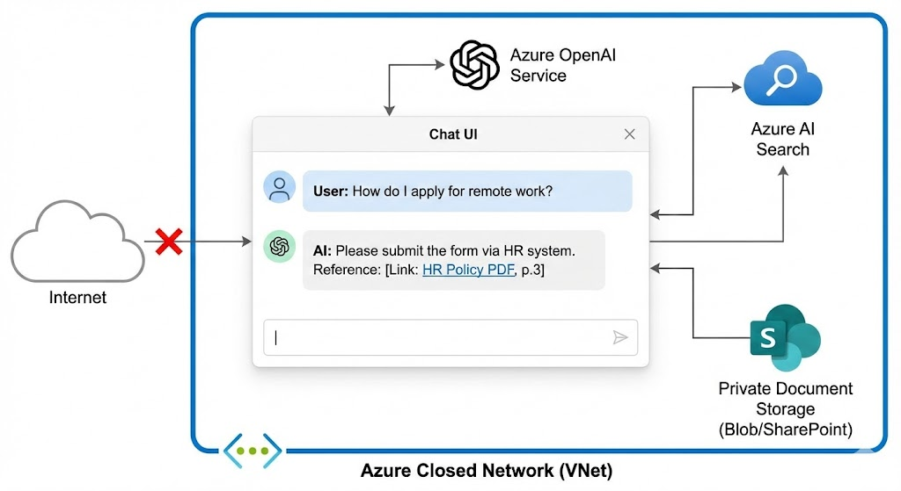
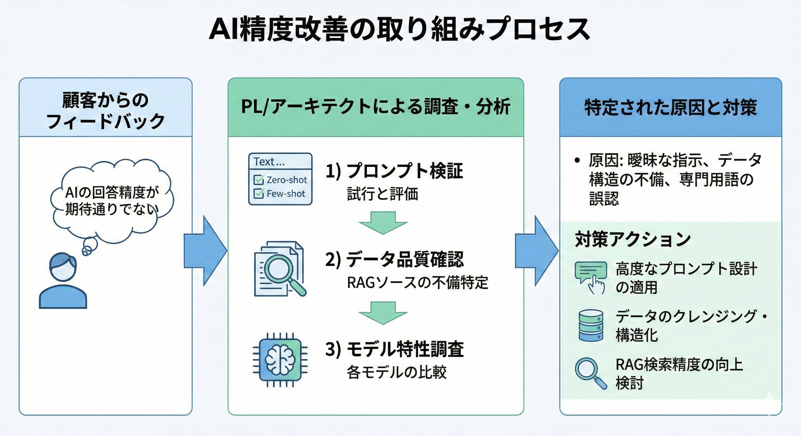

- PROFILE :
- 西崎慧 Nishizaki Kei
和歌山県和歌山市 出身
和歌山大学システム工学部メディアデザインメジャー 卒業
- CONTACT :
- nszkki.19981116@gmail.com
- ADDRESS :
- 大阪府大阪市
Osakashi, Osakafu Japan


大手素材メーカーのある事業部における問い合わせ対応の属人化・業務負荷の課題を解決するため、生成AI技術（RAG: Retrieval-Augmented Generation）を活用した社内FAQサイトの構築をPoC検証として実施した。
■概要
A社のある事業部より「AIを活用した業務改善の検証」という要望を受け、規定類やワークフローシステムのデータを対象としたFAQサイトの構築をリードした。
Azure環境にてA社のネットワーク内で社外に情報が公開されないセキュアなアーキテクチャを実装。海外の社員も利用することを考慮したプロンプトを検討・実装した。一方で、PoCという性質上モデルやデータ整備は最小限のスコープでスタートし、「利用者からみたAIの精度」や「本運用に耐えうるか」を評価・検証するアジャイルなアプローチを採用した。

大手素材メーカーのある事業部では、日々の業務において以下の課題を抱えていました。
・社内からの問い合わせ対応が特定の担当者に集中し、業務の属人化と高負荷が常態化している
・必要な情報が社内規定やワークフローシステムに散在しており、社員が自己解決しづらい環境である

生成AI（RAG技術）を活用した社内FAQサイトを構築し、以下の実現を目指しました。
・社内規定や過去のナレッジをAIに学習（検索拡張）させ、自己解決率を向上させる
・海外拠点の社員も利用することを前提とした、多言語対応・プロンプト設計の実装

プロジェクトリーダー（PL）およびシステムアーキテクトとして参画しました。
顧客の要望ヒアリングから、Azureの閉域網を活用したセキュアなアーキテクチャ設計、プロンプトの検討、PoCの推進まで一気通貫でリードしました。

企業データを安全に扱うため、セキュアなクラウド環境を中心に構成しました。
・クラウド：Azure (App Service / VNet連携)
・AIモデル：Azure OpenAI Service
・検索技術：Azure AI Search (ベクトル検索)
・言語/:C# など

PL/アーキテクトとして、顧客フィードバックから対策立案までの一連の分析プロセスを主導し、RAG含めたAIの仕組みを具体的に知るきっかけともなりました。


本プロジェクトを通して最大の学びとなったのは、「システムを構築するだけでは、実務に耐えうるAIの精度は出ない」という実運用における壁です。PoCリリース後、利用者からは「期待した精度に達していない」という率直なフィードバックをいただきました。しかし、システム自体は現在も継続利用されており、業務効率化への期待値の高さが伺えます。
現在、この結果をネガティブに捉えるのではなく、次期予算枠での抜本的な改善策（LLMモデルの見直し、ベクトル検索からセマンティック検索への高度化、RAG精度向上のための社内データのクレンジング作業）を顧客へ具体的に提案しています。
企業情報を外部に漏らさない、Azureの閉域網を活用したセキュアなRAGアーキテクチャを設計。海外の社員も直感的に利用できるよう、シンプルなチャットUIと適切なプロンプト設計を実装。回答の根拠となる社内ドキュメントへの参照リンクも提示します。